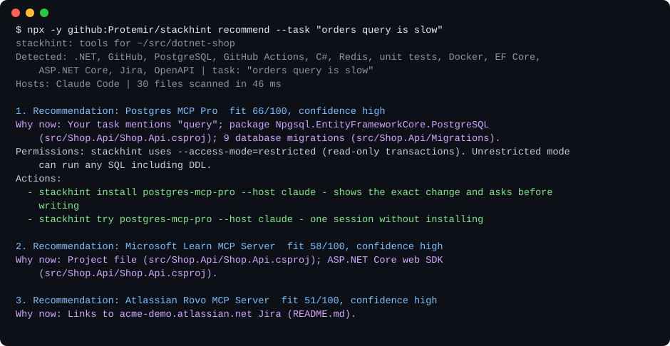

Which MCP servers does your repo actually need?
stackhint looks at your project and at what Claude Code and Codex already have set up, then recommends MCP servers, plugins and skills, pointing at the file that made it think so. It runs locally, has no dependencies and sends nothing anywhere.
Try it in any project (Node.js 20+):
npx -y github:Protemir/stackhint recommendOr in Claude Code, then ask "which MCP servers would help here?":
/plugin marketplace add Protemir/stackhint
/plugin install stackhint@stackhint
What it does
- Reads manifests, compose files, Kubernetes and Terraform, CI,
.env.examplekey names, README links and git history. A README that only says "we might try Kubernetes one day" gets no Kubernetes suggestion. - Knows your setup:
~/.claude.json,.mcp.json, Claude Code plugins,~/.codex/config.toml, skills. It won't suggest what you already have. - Knows 143 tools, checked by hand against vendor docs, including the retired ones:
stackhint checktells you to replace the archived Postgres server and why. - Installs only after showing the diff, with read-only modes by default, tokens referenced by name, a backup and
stackhint rollback. - Works for Claude Code and Codex, as a CLI, a plugin with hooks, or a read-only MCP server.